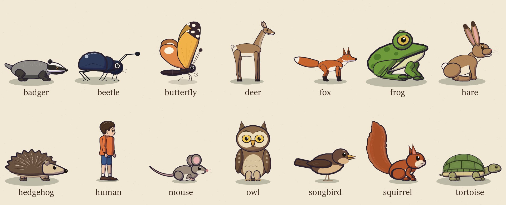
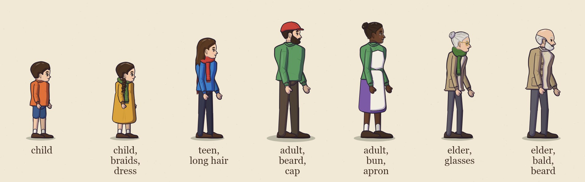

#The cast: rigs
Every actor in a film is an instance of a rig: a character drawn by code in the hand-inked, cel-shaded look, with
named poses, gaits (walk cycles), gestures and facial expressions. A film's cast picks a rig for each actor and sets
its look with params:
"cast": {
"pebble": { "rig": "tortoise", "name": "Pebble", "voice": "pebble", "scale": 1.35,
"params": { "shell": "#4b4630", "moss": "#6e8b3d", "star": 0.35, "lids": 0.3 } },
"nell": { "rig": "human", "name": "Nell", "voice": "nell",
"params": { "age": "elder", "build": "slight", "hairStyle": "bun", "glasses": "#b08a3a", "scarf": "#5e7b3f" } }
}

Two more are things, not characters: the planet (a planet, moon or the Sun, for films in space) and the
telescope.
To see every pose, gait phase, gesture key frame and expression of a rig, labelled:
node bin/cinecode.mjs cast-sheet hare,human # → out/cast-sheet.jpg
node bin/cinecode.mjs cast-sheet films/my-film # every rig, including the film's own custom rigs → films/my-film/out/
The rig lists below come from the code (engine/cast/*.mjs). The skill's inventory script prints the same live
lists as Markdown: node .claude/skills/cinecode/scripts/inventory.mjs cast.
#What every rig has
| meaning | |
|---|---|
| size | height (top to feet) and width (body length) in units at scale 1. On screen an actor is units × set scale × cast scale world pixels; the set scale grows toward the camera (about 1.3 on most kits' main lane). |
| speeds | world units per second at scale 1, per gait. A beat's speed multiplies it. |
| poses | named still poses: "pose": "sit" on a scene actor, { "do": "pose", "pose": "alert" }. Pose changes blend smoothly. |
| gaits | walk cycles used by moves: walk, run, and rig-specific ones (trot, hop, scurry, fly, glide), chosen with a move's gait. Feet plant on the ground while the body moves. |
| gestures | short motions with a fixed length: { "do": "gesture", "who": "fox", "name": "bow" }. They layer in the order they start (one started during another takes over from the pose at that moment). |
| expressions | expr on a scene actor, a say line, an emote, pose or set beat |
| params | the look: colours (any CSS hex colour) and a few rig-specific switches |
| a face | a rig with only the neutral expression (the planet, the telescope, a prop rig), or one that sets faceless: true, has no face: the camera keeps no head of it above the captions, so a zoom above 1 crops into it (framing part of a subject), and lint's face rules skip it |
Every actor also gets idle life without being asked: it breathes, blinks every few seconds (seeded, so every render is
the same), glances at whoever starts speaking (and keeps looking at them if it was never told where to look), and
moves its mouth from the voice's loudness while it speaks. An expression change happens behind a quick blink while the
mouth eases between the two faces, except at a cut; a line's expr holds until a beat changes it, unless it is a
reaction (surprised, laugh, laughing, scared), which passes 0.4 s after the line
(expressions).
perch rigs (owl, songbird, squirrel, butterfly) can stand on a set's perch anchors (branches); flies rigs (owl,
songbird, butterfly) can fly. A flight ends standing somewhere (the ground, a surface, a perch, a hollow, or riding
another actor), or, with "height", hovering in the air, flapping, where it can talk and gesture
(hovering). Any actor can carry a rider
(riding); the tortoise has a riding point on its shell, other rigs carry riders on the top
centre of their drawing. In water, only the frog may stand without wading (lint in-water).
look tilts the head of every rig except the beetle, the butterfly and the songbird: up all the way up, down all
the way down, sky a moderate look up (about 16°), an actor or a place along the line to it, and a look's "tilt"
(−1..1; + up, − down) sets the pitch outright. On a small rig in a wide or full shot the tilt is only a few pixels: a
pose reads better there (the mouse's alert). The deer's long neck stays up, so its head barely drops even at −1.
An animal the engine doesn't have. Writing a rig is a big job (adding a rig); for a short film,
reskin the nearest rig with params and cast scale, and draw what it lacks as an overlay that follows the actor
(api.actor(id).box in effects.md): light on the grade layer, anything else on world. Some
substitutions that read well: a firefly is a small butterfly with dark wings and a yellow body (scale 0.6) plus a
glow overlay; a crow a near-black songbird (scale 1.3; loosely, a bat); a rabbit a hare at scale 0.7; a rat a
mouse; a wolf or a dog a grey or brown fox; a ladybird a red beetle (no spots); a turtle a tortoise. Look at it on a
contact sheet before you commit, and name the substitution in the screenplay. A prop (a strawberry, a kite, a
lantern) is built the same way: a small static rig or a hidden stand-in with an overlay (effects.md).
To frame part of something big (a planet's rings) no stand-in is needed: crop with the camera's zoom or focus.
Cast scale vs. size. Use the cast's scale (0.1–10) to make one actor bigger or smaller than the rig's default.
The framing, routing and lint all account for it.
#Expressions
The animal rigs share eleven expressions:
| expression | face |
|---|---|
neutral |
relaxed, a slight smile |
happy |
smile, raised brows, cheeks up |
laugh |
eyes closed in a smile, mouth open |
sad |
lids lowered, brows up in the middle, frown |
surprised |
eyes wide, brows high, round open mouth |
angry |
slanted brows down, narrowed eyes, frown |
sleepy |
heavy lids |
smug |
half-lidded, one-sided smile |
worried |
brows up in the middle, a small frown |
scared |
eyes wide, small pupils, mouth open |
determined |
brows down, set mouth |
Seen side-on some faces read differently from their names. On the hedgehog, the mouse and the badger, sad (a
heavy lid slanted up toward the snout, the frown hidden in profile) reads as a scowl, close to angry: worried
reads anxious and sleepy weary, and a pose or the music can carry the sadness. Talking opens the badger's mouth to a
dark red gape with fangs and shows the fox's teeth, which read as a snarl on a gentle line in a close-up (frame those
lines medium), and the deer's dropped white jaw reads as a grin. Draw the faces with cast-sheet before a close-up.
The owl adds one-eye. The human has its own set: neutral, happy, sad, surprised, angry, sleepy,
worried, laughing, curious (note laughing, not laugh). An expression a rig doesn't have is a check
problem on emote, pose and set beats, and a warning on say lines and scene actors.
#human

One parametric rig for children, teens, adults and elders, drawn side-on: a true profile head (one eye, the nose on the face edge, the ear mid-head) on a three-quarter body. Height 141 units for the default child; the age sets the proportions (an adult is about 215 units, an elder about 205 and a little stooped). Speeds depend on age and build (a child walks about 92 units/s; an elder walks slower and shorter).
- poses:
stand,idle,idle-weight-shift,sit/sit-ground(on the ground; the hips sit behind the contact point, where the feet will stand when she gets up),sit-seat(on a seat: place her on a surface anchor such as the village'sbench_seat),crouch,kneel,lie,sleep,look-up,hands-on-hips,arms-crossed,reach-up,carry,hold-hand-out. A direct sit ↔ stand blend goes through a crouch, so she leans over her feet as she rises. - gaits:
walk,run - gestures (seconds):
wave1.8,nod0.9,shake-head1.1,shrug1.2,laugh1.8,jump-for-joy1.3 (leaves the ground),point1.3 (follows her eyeline: lookupfirst to point at the sky, or at someone to point at them; a gesture beat passes only itsname, so atoon it is ignored),point-up1.3,point-down1.3,bow1.7,gasp1.1,beckon1.7,clap1.4 - expressions:
neutral,happy,sad,surprised,angry,sleepy,worried,laughing,curious - head pitch:
looktoup/sky/down(or a look'stilt) tilts the head; the eyes follow.
Params. Colours accept hex (#3b2a20) or a name: red, blue, green, yellow, orange, pink, purple,
brown, black, white, grey, blonde, ginger, navy, teal, cream, brass, gold, silver, copper,
bronze, tortoiseshell, steel, moss, olive, ochre, mustard, rust, tan, beige, khaki, maroon,
plum, lavender, sky, charcoal, ivory.
| param | values | default |
|---|---|---|
age |
child, teen, adult, elder |
child |
build |
slight, slim, average, sturdy |
average |
height |
multiplier, 0.6–1.5 | 1 |
skin, eyes, hair |
colours | by age |
blush |
0..1 | 0.5 |
hairStyle |
short, long, ponytail, bun, braids, curly, bald, cap |
by age (short; teens ponytail) |
beard |
none, short, full (adults and elders only) |
none |
top |
shirt, cardigan (an open knit cardigan in the shirt colour over under) |
shirt (elders: cardigan) |
shirt, under |
colours | by age |
bottom |
trousers, shorts, skirt, dress |
by age (children: shorts) |
pants |
trousers / shorts colour | by age |
dress |
dress colour; also the colour of a skirt | none |
dressStyle |
smock (loose from a yoke), fitted |
children smock, others fitted |
hem |
skirt / dress length: 1 = knee, 2 = ankle (0.4–1.95) | by age (elders long) |
shoes |
colour, or null / "none" for bare feet |
brown |
socks |
colour | cream |
scarf, glasses, hat, apron, backpack |
true (default colour), a colour, or false |
false |
scarfLength |
0.4–2.5 (a child in an adult's scarf trails it) | 1 |
tear |
0..1: a bead on the lower lid; from 0.7 a wet streak down the cheek | 0 |
view |
profile (one eye, nose on the face edge), three-quarter (the older head with both eyes) |
profile |
#Animal rigs
Params are colours unless noted. Gesture lengths are in seconds; a gesture beat takes that long.
#badger
Height 35 units, length 92. Speeds (units/s at scale 1): walk 36, run 120.
- poses:
stand,alert,sit,upright,cheer,sleep,rest - gaits:
walk,run - gestures (seconds):
nod0.8,laugh1.4,jump0.9,cheer1.6,wave1.6,dig1.6,sniff1.4 - expressions: the standard eleven
- params:
coat#8d8a86,face#f2efe8,dark#2e2a28,leg#433e3a,claw#d8cdb8
#beetle
Height 7.5 units, length 11. Speeds (units/s at scale 1): walk 11, run 26.
- poses:
stand,alert,sit,sleep,rest - gaits:
walk,run - gestures (seconds):
nod0.6,laugh1,jump0.6,wave1.2 - expressions: the standard eleven
- params:
shell#2e3a5a,leg#1e1e28
#butterfly
Height 17 units, length 10. Speeds (units/s at scale 1): walk 4, fly 80, glide 70. Perches; flies.
- poses:
stand,sit,open,alert,sleep,rest,perch - gaits:
fly,glide,walk - gestures (seconds):
nod0.6,laugh1,jump0.7,flutter1,wave1 - expressions: the standard eleven
- params:
col#f2b24a,col2#e0884a,tip#3a2a30,spot#fbf3e0,body#3a2a30
#deer
Height 143 units, length 100. Speeds (units/s at scale 1): walk 72, run 580.
- poses:
stand,alert,graze,sit,sleep,rest,lie - gaits:
walk,run - gestures (seconds):
nod0.9,laugh1.4,jump1.1,graze2.4,flick0.6,stamp0.8 - expressions: the standard eleven
- params:
coat#a8805a,belly#efe4d0,muzzle#f2ece0,earIn#d9b8a0,hoof#2e2420,eye#2a1810,antler#d8c8a8,antlers0
#fox
Height 83 units, length 92. Speeds (units/s at scale 1): walk 52, trot 148, run 500.
- poses:
stand,alert,sit,lie,sleep,crouch,leap,rest,walk - gaits:
walk,trot,run - gestures (seconds):
nod0.8,laugh1.4,jump0.9,wave1.6,point1.4,sniff1.4,bow1.6 - expressions: the standard eleven
- params:
coat#c8642e,cream#f4ede0,sock#2b2222,eye#a8721c
#frog
Height 19 units, length 24. Speeds (units/s at scale 1): walk 26, hop 26, run 92. walk and hop are the same small
hops (slow: 300 world px take about 9 s); run is big leaps, the way to move a frog quickly.
- poses:
stand,alert,sit,sleep,croak,rest - gaits:
walk,hop,run - gestures (seconds):
nod0.6,laugh1.2,jump0.9,croak1.2,catch0.7 - expressions: the standard eleven
- params:
skin#6f9a3c,belly#e0dca8,spot#4f7a2a,sac#efe8c0,eye#d8b84a
#hare
Height 103 units, length 72. Speeds (units/s at scale 1): walk 46, hop 190, run 640.
- poses:
stand,sit,stretch,bunch,up,mock,laugh,wiggle,offer,look,yawn,sleep,alert,ready,skid,slump,rest,crouch - gaits:
walk,hop,run - gestures (seconds):
nod0.8,laugh1.5,jump0.9,wave1.6,point1.4,yawn2,thump0.9,shrug1 - expressions: the standard eleven
- params:
fur#b08559,belly#efe2c8,earIn#e8a9a0,earTip#4a3428,nose#d97a7a,eye#3a2412,tail#f6efe2
#hedgehog
Height 24 units, length 40. Speeds (units/s at scale 1): walk 18, run 42.
- poses:
stand,alert,sit,ball,sleep,rest - gaits:
walk,run - gestures (seconds):
nod0.7,laugh1.2,jump0.7,sniff1.4,curl2.2,bristle1 - expressions: the standard eleven
- params:
spine#6a5240,tip#e8dcc4,face#d8c09a,belly#c9b08a,skin#b89878
#mouse
Height 17.5 units, length 17. Speeds (units/s at scale 1): walk 24, scurry 24, run 80.
- poses:
stand,sit,alert,gasp,cheer,sleep,rest,idle - gaits:
walk,scurry,run - gestures (seconds):
nod0.6,laugh1.2,jump0.6,wave1.4,point1.3,cheer1.4,gasp1.2 - expressions: the standard eleven
- params:
fur#9a8a7c,belly#e6dccb,earIn#e8b0b0,nose#d88a8a,paw#e3b6a8,tail#c49a92,eye#1a1210
#owl
Height 62 units, length 36. Speeds (units/s at scale 1): walk 22, run 70, fly 220, glide 200. Perches; flies.
- poses:
stand,alert,sit,sleep,spread,hoot,rest - gaits:
walk,run,fly,glide - gestures (seconds):
nod0.8,laugh1.4,jump0.9,hoot1.2,flap1.2,turn1.8,wave1.4 - expressions: the standard eleven plus
one-eye - params:
body#8a6a4a,belly#d9c4a0,disc#ecdcbc,wing#7a5a3e,beak#e0a840,eye#f2c94c,leg#cdb48c,toe#b8955a
#songbird
Height 24 units, length 30. Speeds (units/s at scale 1): walk 26, hop 26, run 54, fly 190, glide 170. Perches; flies.
- poses:
stand,alert,sit,sleep,sing,spread,rest,perch - gaits:
walk,hop,run,fly,glide - gestures (seconds):
nod0.6,laugh1.2,jump0.6,sing2,flap1,peck0.8,wave1.2 - expressions: the standard eleven
- params:
body#6a4a3a,breast#d9b386,wing#553a2c,beak#e0ad5a,leg#8a6a50
#squirrel
Height 52 units, length 24. Speeds (units/s at scale 1): walk 24, run 165. Perches.
- poses:
stand,sit,hold,alert,shush,sleep,flop,sprawl,rest,perch - gaits:
walk,run - gestures (seconds):
nod0.7,laugh1.3,jump0.8,wave1.4,point1.3,shush1.5,drop1.2,nibble1.6 - expressions: the standard eleven
- params:
coat#b4542a,cream#f0dcc0,earIn#d98a78,nose#3a2020,eye#1a1210,tail1
#tortoise
Height 50 units, length 96. Speeds (units/s at scale 1): walk 15, run 34. Has a riding point (mount); slow looker (1 s).
- poses:
stand,alert,stretch,sit,sleep,hide,droop,rest - gaits:
walk,run - gestures (seconds):
nod1,laugh1.5,jump0.9,wave1.8,hide2.4,stretch1.6 - expressions: the standard eleven
- params:
skin#a7a36a,shell#6f8a46,rim#d8c58c,claw#e8e0c0,eye#2a1e16,irisnull,seamnull,mossnull,star0,starCol#ede6d0,lids0,wet0
#Worlds and things
#planet
A planet, moon or star as an actor: the camera frames it (on), pushes in on it and lints it like a character. One
rig with a body preset per world: saturn (default), jupiter, earth, mars, venus, mercury, uranus,
neptune, moon (Earth's), titan, sun. Every globe is drawn 100 units across (Saturn is 226 with its rings, 91.5
tall), so sizes come from the cast scale: for true relative sizes, multiply by the ratio of their radii (radiusOf
in cinecode/paint/planets, true equatorial radii in km: Earth / Saturn = 0.1058, so an Earth beside a Saturn at
scale 2.5 is 0.26). Saturn's rings are at their true radii (the C, B and A rings, the Cassini Division and the Encke
Gap); the colours are a storybook's.
- poses:
stand,perch; it holds at aperchanchor (thespacekit's) or stands on the ground - expressions:
neutralonly: no face. It stays upright on a slope and throws no shadow. - params:
body;tilt(the rings' opening, radians: 0 edge-on, Saturn's default 0.38),roll(the whole body turned in the picture),axis(how much of a ringless body's pole we see),spin(band and feature drift per second),size - Its
headis the globe's centre, so acloseshot frames the globe. A moon behind or in front of a planet is another planet actor with az(depth); the built-in space effects (sizerow,moonlets,orbit,lightpulse,sunglow: effects.md) take a planet actor aswho.
#telescope
A refractor on a wooden tripod, seen side-on, the tube pointing up the way it faces, a prop with no face. Height 192.3 units (the tube's tip), 74 long.
- params:
angle(the tube's elevation, radians, default 0.5),eye(the eyepiece's height, units, default 116: a standing child's eye with the human rig),tube,trim,legs,dark(colours) - A child at the eyepiece faces the same way and stands 66 × s behind the telescope's contact point, a few px nearer
the camera (s = the set's scale there × cast
scale): facing left, the child's x = the telescope's x + 66 × s. - Its
headis the eyepiece, so acloseon it frames the eyecup and a face at it.
#Rig-specific params
| rig | param | meaning |
|---|---|---|
| deer | antlers |
1 draws antlers (0: none) |
| squirrel | tail |
brush size, 0.4–1.8; above about 1.1 fluffier, below 0.7 flat and thin like a wet paintbrush |
| tortoise | star |
0..1 opacity of a pale five-point marking on a rear scute (0: none); starCol its colour |
| tortoise | moss |
a colour for moss patches on the shell, or null |
| tortoise | seam |
scute seam colour (default: a darker shell) |
| tortoise | lids |
0..1 resting upper-lid closure (an old animal's heavy lids) |
| tortoise | wet |
0..1: darker, glossier shell and skin, with drips falling from the rim |
| tortoise | iris |
an iris colour (eye is then the pupil); null = one dark eye |
The tortoise is a slow looker (a look or head tilt takes about 1 s), withdraws its head with the hide gesture and
pose, and has a droop pose (head lowered, sad). The squirrel's flop pose lies over something rounded (a shell, a
branch) with its legs and tail hanging. Change params mid-scene with a set beat:
{ "do": "set", "who": "pebble", "params": { "wet": 0 } }.
#Adding a rig
A film can bring its own rigs: one file per rig, films/<slug>/rigs/<kind>.mjs, that default-exports it (for every
film of a project, cinecode/rigs/<kind>.mjs at the project root; custom.mjs may also export a list as rigs).
Use its kind in the cast. The easy way to write one is makeRig from cinecode/rig, which turns a paint()
function into the full rig contract: drawing at any position, scale and facing, the ground shadow, bounds for framing
and lint, facial expressions, blinks, talking and head pitch. This example is a complete, working rig that passes the
gate, cinecode verify-rig films/<slug>/rigs/pebblet.mjs (the build-rig skill walks through a new rig from its
starter, a small biped with planted feet):
// films/<slug>/rigs/pebblet.mjs
import { makeRig, mixPose } from 'cinecode/rig';
import { cel, eye, line } from 'cinecode/style';
import { ell } from 'cinecode/lib';
// Pose fields are plain numbers that paint() reads: here a body drop `by` and a lean `ln` (radians).
const stand = { by: 0, ln: 0 };
const bob = (amp, ph) => ({ ...stand, by: -amp * Math.abs(Math.sin(Math.PI * 2 * ph)) });
const pebblet = makeRig({
kind: 'pebblet', label: 'Pebblet',
height: 40, headHeight: 24, width: 36, // units at scale 1: for framing, routing and lint
params: { body: '#8fb0c8', eye: '#2a1a14' },
speeds: { walk: 30, run: 90 }, stride: { walk: 18, run: 40 },
poses: { stand, sit: { ...stand, by: 5 }, sleep: { ...stand, by: 7 } },
gaits: { walk: ph => bob(2, ph), run: ph => bob(5, ph) },
gestures: { nod: { dur: 0.8, at: (u, base) => mixPose(base, { ...base, ln: 0.25 }, Math.sin(Math.PI * u)) } },
// local units: origin = the contact point, +x = forward, y up is negative, the ground is y = 0
paint(T, p, F, o) {
T.save(); T.translate(0, p.by - 18); T.rotate(p.ln); T.translate(0, 18); // drop by `by`, lean about the middle
cel(T, ell(0, -18 - p.by / 2, 19, 18 - p.by / 2, 7, 0.5), o.P.body, 1.6, 1, 7); // body, squashed onto the ground
eye(T, 8, -24, 3, 3.6, F.eye, o.P.eye, F.look * 0.3, F.lid, F.tilt); // expression, blinks, looks
const m = 2 + 4 * F.open; // F.open: talk / expression
line(T, [[6, -13], [10, -13 + m * 0.5 - F.smile * 1.5], [14, -13]], 0.8, { seed: 9 });
o.out.head = T.map(6, -24); o.out.mouth = T.map(10, -13); // anchors for framing and lip sync
T.restore();
},
});
export default pebblet;
"cast": { "pebblet": { "rig": "pebblet", "name": "Pebblet", "voice": "pebblet" } }
How it fits together:
paint(T, pose, F, o)draws in local units: the origin is the contact point (the feet), +x is forward (the rig is mirrored forface: -1), the ground is y = 0 and up is negative y.Tis a 2D context wrapper that also records what is drawn, so bounds are exact.poseis the current pose object: one ofposes, a gait frame (gaits.walk(phase)for phase 0..1 over one stride), a gesture frame (gestures.nod.at(u, base)for u 0..1), or a blend of them. Pose fields are plain numbers that only yourpaintreads. A pose may setlift(units above the ground, e.g. a jump).- A gesture's
at(u, base)should start and end on the pose it is given (base). If it doesn't, the actor eases it in or out over 0.15–0.3 s (longer for a bigger move). A gesture may listkeys, the u of its key drawings ({ dur, at, keys: [0.1, 0.4, 0.7, 1] }; the cast sheet draws them). One whosekeysinclude 1 is one-way: it ends on purpose away from the pose (the squirrel'sdropleaves the acorn on the ground) and is not eased out. Fis the face for this frame, from the expression, blink and lip sync:F.eye(open,wide,happy),F.lid(0..1),F.open(mouth, 0..1; it follows the voice while talking),F.smile(−1..1),F.browY,F.browT,F.tilt,F.look(−1..1 head turn),F.pitch(−1..1 head tilt).eye(),brow(),cel()andline()incinecode/styledraw them in the house style. The helpers, all in local units and takingTfirst:cel(T, pts, colour, shade = 2.2, ink = 1.15, seed)fills a closed outline, shades the side away from the light byshadeunits and inks it (ink0: no outline);line(T, pts, width, { seed, taper, color, closed })an inked stroke;fillP(T, pts, colour)a flat fill;dot(T, x, y, r, colour);smoothPts(T, pts, { closed, px, corner })rounds a polygon into a smooth outline;eye(T, x, y, rx, ry, F.eye, iris, look, F.lid, F.tilt)andbrow(T, x, y, w, F.browY, F.browT);darken(hex, f),lighten(hex, f),rgba(hex, a). Fromcinecode/lib:ell(cx, cy, rx, ry, seed, wobble = 1.5, rot)a hand-drawn ellipse as points,rpoly(pts, r, { seed })a rounded polygon,rng(seed)a seeded generator.- A prop is a rig too (a strawberry that splits and is eaten): no gaits or gestures to speak of (
gaits: { walk: () => stand },speeds: { walk: 1 }), a pose per state (split) and params for the rest (left: 1→ 0 as a half is eaten),shadowWto size its ground shadow. See effects.md for what comes with it. o.Pholds the params (the rig'sparamsmerged with the cast's),o.tthe scene time for secondary motion. Seto.out.headando.out.mouthwithT.map(x, y): the camera composes close-ups on the head, captions avoid it, and the mouth is where talking happens.height,headHeight,width,speedsandstridedrive framing, routing and walk timing.strideis how far one gait cycle travels, so feet don't slide.- Optional:
perch: true,flies: true(with aflygait),mount(pose, params)→[x, y]riding point,lookTime(seconds a look takes),feet(pose)→ contact points (so gestures layered over a walk keep planted feet still),steps: { walk: [0, 0.5] }(gait phases where a foot lands, for footstep sounds),expressions(default: the eleven above),shadowW,breathPeriod,hangPoses(poses whose legs hang below the ground on purpose).sizes(params)→{ height, headHeight, width, speeds, stride }when the numbers depend on the params (the human's age, the planet's body; without it asizeparam scales them).upright: truekeeps the drawing vertical on a slope (falsemakes it follow the slope; by default animals follow and the human and fliers stay upright).noShadow: truedraws no contact shadow under it;shadowAis that shadow's opacity (default 0.26).faceless: true(orfalse) says whether the rig has a face, when its expressions alone would say otherwise.
A rig written without makeRig must provide the contract in DESIGN.md §2 (kind, draw(ctx, x, y, s, face, st)
returning { head, mouth, bounds } and accepting ctx = null, bbox, poses, gaits, gestures, expressions).
Check the result with node bin/cinecode.mjs verify-rig <file>: contract, size, bounds, ground, flip, determinism,
face and motion, plus two images to look at (every pose, gait phase, gesture key and expression; a line-up beside the
hare, the child and the mouse), written to out/verify/ beside the folder that holds the rig
(films/<slug>/out/verify/ for a film's, cinecode/out/verify/ for a project's; the gate prints the paths). A rig
whose kind is a built-in one's replaces it for the film (check says so), so give it a kind of its own. Then node bin/cinecode.mjs cast-sheet films/<slug> <kind>. A rig used by more than
one film of a project goes in its cinecode/rigs/; one that becomes part of the engine in engine/cast/<kind>.mjs
(every file there is registered automatically) with a test in test/rigs.test.mjs.